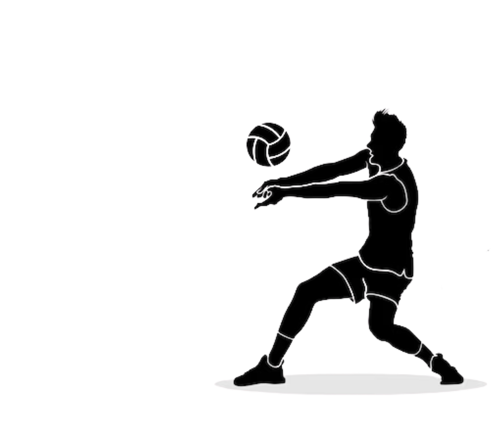
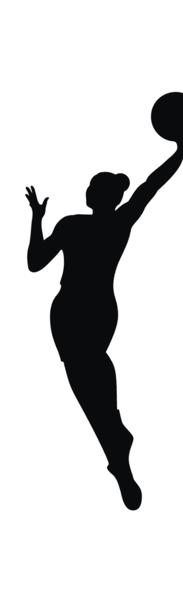
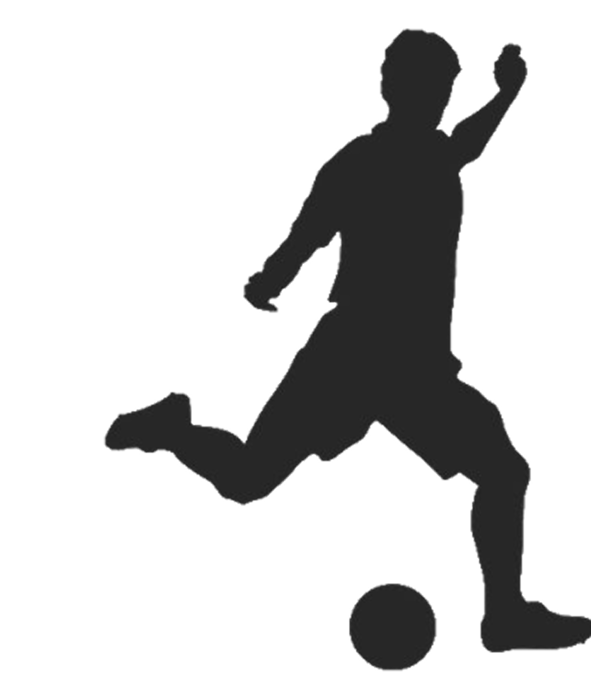

Transformar o modo como atletas se desenvolvem. Com o Capture Win, queremos unir tecnologia e desempenho esportivo, oferecendo ferramentas rápidas, inteligentes e motivadoras que ajudem cada atleta a alcançar seu melhor. Acreditamos que todo progresso merece ser capturado, analisado e celebrado — e estamos aqui pra tornar isso possível, de forma inovadora e inteligente.
"Salve! Eu sou o Erick, designer e desenvolvedor front-end. Também jogo vôlei nas horas vagas, então sei bem o valor de ter um sistema intuitivo que ajuda no desempenho. Eu cuido do visual do app/site e da experiência do usuário, pra que tudo seja bonito, rápido e funcional!"
Sou a Gabi, jogadora de basquete e apaixonada por performance! Na Athlete-Tech, cuido da parte de análise de rendimento e como a tecnologia pode ajudar atletas a se superarem. Minha vivência nas quadras me ajuda a entender exatamente o que os atletas precisam.
>Eu sou o Mayk, jogador de futebol e cabeça por trás da ideia de integrar análise técnica com inteligência artificial. Meu foco na empresa é pensar em como a IA pode facilitar a vida dos atletas e técnicos, e desenvolver as soluções junto com nosso time de devs
>